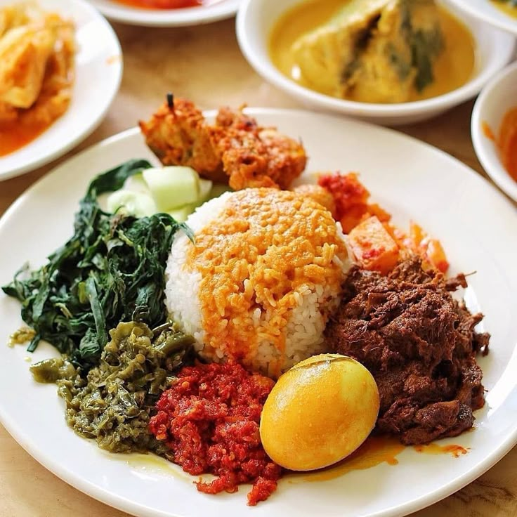

Get to know more about my profile, interests, skills, and educational journey, along with the experiences that continue to shape and inspire me.
Touch the Picture of Me to See Another Image

Indonesian rice served with rich, spicy, and flavorful Minangkabau dishes.
Indonesian noodles served with seasoned chicken, savory sauce, and fresh toppings.
A traditional Indonesian beef soup with savory black broth made from keluak and aromatic spices.
I love Spider-Man 2 because of its compelling story and emotional depth. The film explores Peter Parker’s struggle to balance his personal life with his responsibility as Spider-Man, making it a meaningful story about sacrifice, courage, and responsibility.
I love Undisputed 4: Boyka because of its intense action, powerful fight scenes, and inspiring story. The film highlights determination, discipline, and the willingness to overcome challenges and become a better version of yourself.
I love Johnny English Reborn because of its hilarious comedy, entertaining action, and unforgettable character. The film combines spy adventures with humor, making it a fun and enjoyable movie to watch.
I love “Love Yourself” by Justin Bieber because of its catchy acoustic sound and relatable message. Its simple yet honest lyrics make the song feel memorable and easy to connect with.
I love “Take A Chance With Me” by NIKI because of its dreamy sound and honest expression of vulnerability. The song captures the feeling of taking a leap of faith for someone and embracing the uncertainty that comes with it.
I love “You & I” by One Direction because of its emotional melody and heartfelt message about staying together through challenges. It is a song that feels personal, comforting, and meaningful to me.